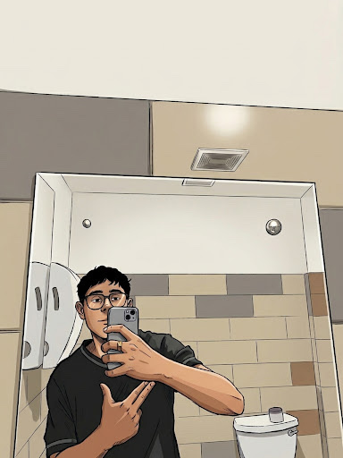
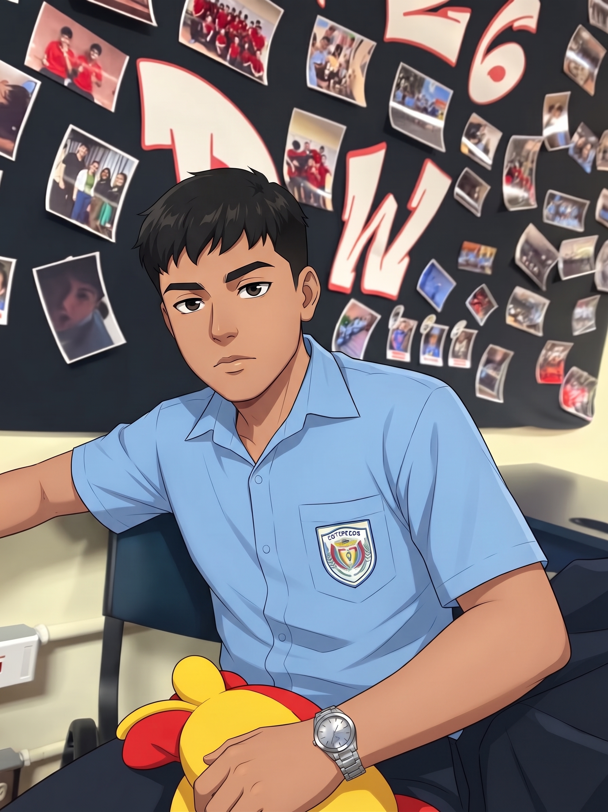

Brandy:
Brandon también conocido como brandy es un maje que estudia en el colegio COTEPECOS, tiene dos mejores amigos que son el maje Tomás y el mae Santi, tambié Brandy es una persona muy amigable y muy atarctivo

Género: Aventura y Acción
Brandon también conocido como brandy es un maje que estudia en el colegio COTEPECOS, tiene dos mejores amigos que son el maje Tomás y el mae Santi, tambié Brandy es una persona muy amigable y muy atarctivo
Tomás compañero de Brandy, mayor asistidor, domina todas las ias existentes, cree que es amigo de todos las personas y se siente el personaje principal de una pelicula

Santi el otro compañero de Brandy y uno de sus mejores amigos, él es muy carismatico y muy socia, muchas estudiantes del COTEPECOS estan enamoradas de él pero él es un hombre fiel a su novia

Bueno el día empieza como cualquier otro miercoles Brandy se despierta temprano, se alista y después se va para el colegio cuando llega al colegio se encuentra con Santi y Tomás de camino al laboratorio de la profe Ale (la mejor profe del mundo), cuando llegan toca el timbre entonces guardan los bolsos rapido en los casilleros y se meten al aula, ya en el aula ellos agarran sus computadoras, se acomodan en sus lugares y se ponen a chambear en los cursos de cisco y en los trabajos que les deja la profe Ale cosa que es mentira porque se ponen hablar,se ponen de pie, empiezan a jugar y hacen de todo menos trabajar profe Ale se lleva muy bien con ellos, bueno eso dicen, en las primeras 3 lecciones se la pasan de vagos y en las otras 3 tambien pero Tomás le cuenta de unos corsos sobre la inteligencia artificial, a Santiago y a Brandon les interesa el curso entonces Tomás les explica como hacer para que nos den una ayuda economica para no tener que pagar el precio completo y nos salga mucho más barato, al instante de que Tomás les explica como hacerlo lo van y lo hacen ellos en sus cuentas. Cuando estan llenando la ayuda economica se dan cuenta de que tienen que hacer un texto hablando de porque ocupan la ayuda entonces Santi y Brandy se ponen a inventar un monton de cosas para que les den la ayuda, luego de llenar todo les mandan un correo diciendo que esperen a que les acepten la ayuda, ya después de hacer todo eso se ponen hablar con profe Ale porque tenian dudas con un curso de de cisco y en eso que estan hablando Santi dice que todas las mujeres del colegio estan enamoradas de él, a Tomás no le gusto eso y dijo que estaba mintiendo que más bien todas las mujeres estaban enamoradas de él, en eso se hizo una super pelea para ver quien era el más guapo y al final no termino en nada la pelea porque los dos son unos mentirosos, ya a las 11:10 guardaron las computadoras y todo lo que usaron para esperar que tocaran y irse almorzar.